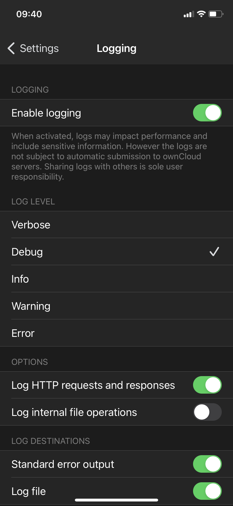
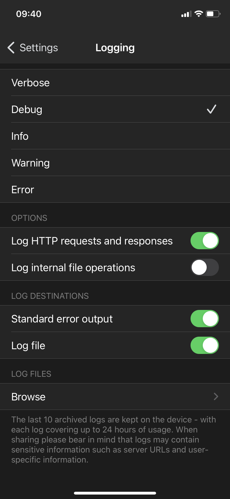
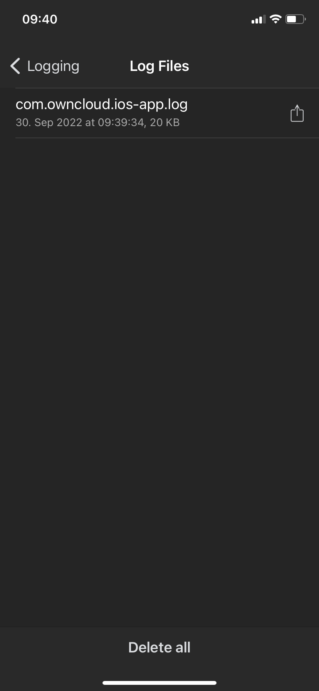
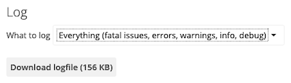

Troubleshooting
Introduction
This guide takes you step by step through how to troubleshoot issues with ownCloud’s iOS App for iPhone and iPad. In particular, it shows how to configure logging.
Logging
Locating App Logs and iOS App Crash Logs
There are two kinds of logs recorded in different locations:
See Capturing App Debug Logs for how to enable app logs. On the same screen where you enable logging, you can access the log files. Touch Share log file which opens a new screen with all the log files created. To export the selected logs, tap the share button on the top right-hand side of the screen.
If the iOS app isn’t responding or is crashing, iOS saves a crash log on the device. You can find the crash log on your device under . The log entries are sorted alphabetically with the app name, the date and a computer-readable timestamp. Tap the log of choice to open the crash log and export it with the share button on the top right-hand side of the screen.
Capturing App Debug Logs
Effectively debugging software requires as much relevant information as possible. Log output can help with tracking down problems and, if you report a bug, log output can help to resolve an issue more quickly. To assist the ownCloud support personnel, please try to provide as many relevant logs as possible. You can do this by enabling and fully configuring the iOS app’s logging functionality via:
-
Enabling logging with
-
Setting the log level to "Debug" or "Info"
-
Enable:
-
Log HTTP requests and responses
-
Standard error output
-
Log file
-
Once these have been enabled:
-
Click Browse at the end of the same settings page
-
Click Delete all in the following settings page
-
Perform the steps to reproduce the error
-
Go back to the Logging settings click Browse and click Share log file (the rectangle with the arrow next to the log file)
 |
→ |
 |
 |
Log HTTP Requests and Responses
If HTTP logging is enabled, log files will contain additional entries:
2023-09-01 17:18:35.107000+0200 ownCloud[8828:307914] [dbug] | [HTTP, Request, …] Sending request:
2023-09-01 17:18:35.332000+0200 ownCloud[8828:307914] [dbug] | [HTTP, Response, …] Received response:| Log Content | Description |
|---|---|
|
Timestamp with timezone. |
|
ownCloud app or FileProvider process. |
|
Log item category label. |
|
|
ownCloud’s Log File
ownCloud server maintains an ownCloud-specific log file. You can view the file using either the web interface or you can open it directly from the file system in your ownCloud server’s data directory.
You can check if it is enabled through the Log configuration panel, which is available under
. On that page, you can adjust the log level.
We recommend that you set it to a verbose level such as either debug or info.

Web Server Log Files
It can be helpful to view your web server’s error log file to isolate any ownCloud-related problems.
The ownCloud iOS app sends the X-REQUEST-ID header with every request. You’ll find the
X-REQUEST-ID in the owncloud.log, and you can configure your webserver to add the
X-REQUEST-ID to the logs. Here you can find more information at
Request Tracing
Recording the Screen
In iOS 11 or later, you can create a screen recording to better illustrate an error. If you are not familiar with creating one, follow these instructions.